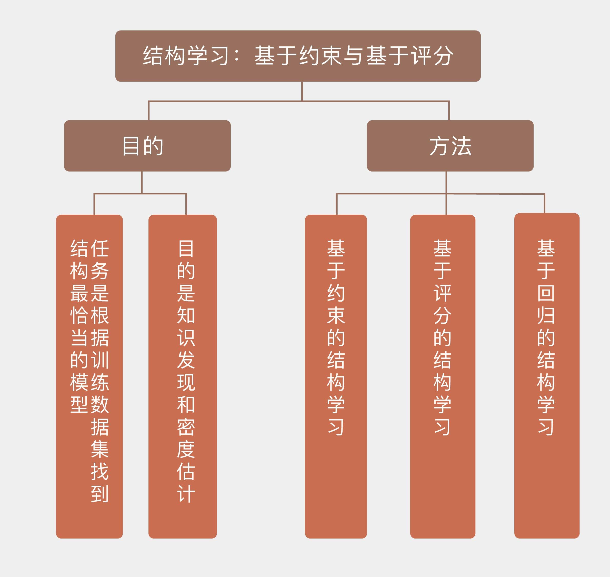

- 00 开篇词 打通修炼机器学习的任督二脉.md
- 01 频率视角下的机器学习.md
- 02 贝叶斯视角下的机器学习.md
- 03 学什么与怎么学.md
- 04 计算学习理论.md
- 05 模型的分类方式.md
- 06 模型的设计准则.md
- 07 模型的验证方法.md
- 08 模型的评估指标.md
- 09 实验设计.md
- 10 特征预处理.md
- 11 基础线性回归：一元与多元.md
- 12 正则化处理：收缩方法与边际化.md
- 13 线性降维：主成分的使用.md
- 14 非线性降维：流形学习.md
- 15 从回归到分类：联系函数与降维.md
- 16 建模非正态分布：广义线性模型.md
- 17 几何角度看分类：支持向量机.md
- 18 从全局到局部：核技巧.md
- 19 非参数化的局部模型：K近邻.md
- 20 基于距离的学习：聚类与度量学习.md
- 21 基函数扩展：属性的非线性化.md
- 22 自适应的基函数：神经网络.md
- 23 层次化的神经网络：深度学习.md
- 24 深度编解码：表示学习.md
- 25 基于特征的区域划分：树模型.md
- 26 集成化处理：Boosting与Bagging.md
- 27 万能模型：梯度提升与随机森林.md
- 28 最简单的概率图：朴素贝叶斯.md
- 29 有向图模型：贝叶斯网络.md
- 30 无向图模型：马尔可夫随机场.md
- 31 建模连续分布：高斯网络.md
- 32 从有限到无限：高斯过程.md
- 33 序列化建模：隐马尔可夫模型.md
- 34 连续序列化模型：线性动态系统.md
- 35 精确推断：变量消除及其拓展.md
- 36 确定近似推断：变分贝叶斯.md
- 37 随机近似推断：MCMC.md
- 38 完备数据下的参数学习：有向图与无向图.md
- 39 隐变量下的参数学习：EM方法与混合模型.md
- 40 结构学习：基于约束与基于评分.md
- 如何成为机器学习工程师？.md
- 总结课 机器学习的模型体系.md
- 总结课 贝叶斯学习的模型体系.md
- 结课 终有一天，你将为今天的付出骄傲.md
40 结构学习：基于约束与基于评分
看完了参数学习，我们再来看看结构学习。
结构学习（structure learning）的任务是找到与数据匹配度最高的网络结构，需要同时学习未知图模型的结构和参数。这也很容易理解：模型的结构都不知道，参数自然也是不知道的，所以需要一并来学习。结构学习的任务是根据训练数据集找到结构最恰当的模型，这无疑比参数学习要复杂得多，也有更多的不确定性。
对图模型进行结构学习的目的有两个。一方面在于知识发现（knowledge discovery），根据因变量的结果来判定自变量之间的依赖关系；另一方面则在于密度估计（density estimation），估计出数据分布的特性，据此对新样本进行推断。
对图模型进行结构学习有哪些方法呢？主要有三种，分别是基于约束的学习、基于评分的学习和基于回归的学习，这三种方法都可以应用在有向的贝叶斯网络和无向的马尔可夫随机场中，但在下面的介绍中我将以较为简单的贝叶斯网络为例。
基于约束的结构学习（constraint-based structure learning）将贝叶斯网络视为条件独立性的表示，与贝叶斯网络的语义非常贴近。这种方法首先从数据中识别出一组条件独立性作为约束，然后尝试找到最符合这些约束的网络结构。基于约束的学习与贝叶斯网络的结构特征密切相关，但它缺乏类似于似然函数的显式目标函数，因而不能直接找到全局的最优结构，也就不适用于概率框架。
基于约束的典型算法是SGS算法，这个名字来源于三位设计者的首字母缩写。SGS采用遍历式的方法来判定结点之间是否应该有边存在，它首先在结点集合上构造出全连接的无向图，再对图中多余的边做出删减。具体的做法是判断选出的两个节点\(i, j\)在给定其他所有结点的条件下是否条件独立，如果存在让\(i\)和\(j\)满足\(d\)分离性的结点子集，那就把\(i\)和\(j\)之间的边去掉。对所有的结点对都进行上述操作，就可以删除冗余边，得到新的简化无向图。
上面的步骤只能确定边的存在性，要形成贝叶斯网络还得给通过审核的每条边确定方向。定向的方法是找到所有具有\(i - j - k\)形式，也就是两端的结点互不相连、但都与中间结点相连接的结点三元组，并判断\(i\)和\(k\)之间的条件独立性。当且仅当\(i\)和\(k\)无论如何都不满足\(d\)分离性时，将这个三元组定义成汇连结构\(i \\rightarrow j \\leftarrow k\)。
对所有的三元组都进行完上面的检测之后，接下来要重复以下步骤：如果三元组具有\(i \\rightarrow j - k\)的形式，同时\(j\)又没有指向其他结点的有向边，那就直接添加一条从\(j\)到\(k\)的有向边\(j \\rightarrow k\)；如果\(i\)和\(j\)之间存在未确定方向的边，同时还有从\(i\)出发经过其他结点到\(j\)的有向路径，那么两者之间的无向边就被定向为\(i \\rightarrow j\)。当以上步骤重复到没有新边需要定向时，图模型的结构就确定了。
SGS算法最大的问题在于运算复杂度，其运算量会随着结点数目的增加以超指数的方式增长，因而不具备可扩展性。除了计算问题之外，SGS算法在可靠性上也有缺陷，其确定高阶条件独立关系的可靠性远不如低阶独立关系。在SGS算法的基础上还衍生出了PC算法和针对大规模网络的增长-收缩算法（grow-shrinkage algorithm），在此就不赘述了。
与基于约束的学习不同，基于评分的结构学习（score-based structure learning）把结构学习问题处理为模型选择问题。这种学习方法将图模型与数据的匹配程度定义为评分函数（score function），再在所有可能的结构中搜索出评分最高的那个作为结果。
基于评分的学习的首要任务是选择合适的评分函数。评分函数决定了数据和结构之间的拟合程度，必须要满足评分等价性和可分解性两个条件。评分等价性指的是独立性关系相同的等价网络所获得的分数应该相同，可分解性指的则是评分函数能够被分解为多个子函数的累加，每个子函数对应一个局部结构，一个结构的变化不会影响其他结构部分的分数。
定义评分函数的常见出发点是信息论，如果将学习问题看作最优编码问题，就可以定义出最小描述长度作为评分函数。
最小描述长度（minimal description length）借鉴了信息熵的概念，其目标是找到一个能以最短编码长度描述训练数据的模型。
计算出的模型长度包括两部分，一部分用来描述贝叶斯网络本身，其字节数取决于参数个数；另一部分用于描述用这个网络表示的数据，其字节数取决于数据在模型下的似然概率。
网络中的参数越多，似然概率的表示就越精确，但过拟合的风险也会越大。两者的折中就是模型复杂性与模型表示样本的准确性之间的平衡这个老生常谈的问题。
除了最小描述长度之外，赤池信息量准则（Akaike information criterion）和贝叶斯信息量准则（Bayesian information criterion）也是基于信息论的评分函数，它们都将评分表示成“模型+数据”的组合，其形式可以看成是给模型下的对数似然概率\(\\ln L\)添加了和模型参数数目有关的正则化项。
赤池信息量准则的正则化项是参数数目\(k\)乘以常数系数，而贝叶斯信息量准则的正则化项则是参数数目\(k\)乘以样本容量\(n\)的对数，两者的数学表达式为
\[ {\\rm AIC} = 2k - 2\\ln L, {\\rm BIC} = k\\ln n - 2\\ln L \]
和最小描述长度一样，这两个指标也是越小越好。
在设计评分函数时，如果将数据和模型融合在一起，得到的评分函数就是贝叶斯狄利克雷评分（Bayesian Dirichelet），这个函数可以写成对狄利克雷分布的求和。
贝叶斯狄利克雷评分是在已知结构时通过计算样本数据的边际似然函数作为评分的依据，计算时假定贝叶斯网络的参数服从狄利克雷形式的先验分布。利用似然等价性约束，也就是等价结构获得的分数相同可以对贝叶斯狄利克雷评分做出改进，这一改进就相当于计算模型关于样本集的后验概率。
选定了合适的评分函数后，接下来就要在假设空间中搜索这个评分函数上的最优解。由于评估所有备选结构的分数难以实现，因此在搜索时，通常使用启发式算法来查找次优结构。贪婪搜索、遗传算法、进化规划、模拟退火算法和蚁群算法等启发式算法都可以应用在最优结构的搜索中。
将贪婪搜索应用在结构学习中时，需要先初始化一个网络结构，以它为蓝本每次对一条边进行增加、删除或者改变方向，直到新结构的评分函数值不再降低为止。要进一步简化运算量，还可以对图结构施加额外的约束以削减假设空间，这相当于又引入了一重先验。
和前面两位老大哥相比，基于回归的结构学习（regression-based structure learning）至少从资历上说还是个小弟。这类算法的出发点是将目标函数表示为图模型参数的线性组合，再对线性模型进行\(L_1\)或\(L_2\)正则化处理来控制模型的复杂度。其优势在于可以确保目标函数最优解的存在性，明确了学习问题的意义，同时还具有良好的可扩展性。
基于回归的不同方法之间的区别在于目标函数的不同。最直接的方式是将图结构关于数据的对数似然定义为目标函数，并使用拉普拉斯先验来简化模型。结点之间的独立性也可以用LASSO回归来估计，这通常被应用于建模连续变量的高斯图模型（Gaussian graphical model）中，其任务是确定给定结点的马尔可夫毯，线性系数不为0的其他结点和目标结点之间都存在依赖关系。
将回归模型与评分函数相结合，还可以把最小描述长度表示为参数的线性组合，对其进行优化以确定模型结构。关于这些方法的具体细节在此就不作介绍了。
上面所介绍的方法都是建立在完全观测数据的基础上的。如果模型中存在隐变量，结构学习的难度也会大大增加。将专门处理隐变量的EM算法引入到结构学习之中，得到的就是结构EM（Structural EM）算法。
结构EM算法在具有结构和参数两个维度的假设空间内进行搜索，在每一轮次的搜索中，原始的EM算法是为固定的模型更新参数，结构EM算法则同时更新参数和模型，更新的方式是让模型的评分函数最大化，评分函数的选择是参数关于模型后验概率的信息熵，当然也可以使用贝叶斯信息量准则或者最小描述长度这类指标。
今天我以贝叶斯网络为例，和你分享了概率图模型中的结构学习任务，包含以下四个要点：
结构学习的任务是找到与数据匹配度最高的网络结构，需要同时确定图模型的结构和参数；
基于约束的结构学习通过条件独立性的约束确定贝叶斯网络的结构，需要先后确定边的存在性和方向；
基于评分的结构学习通过数据和结构的匹配度确定贝叶斯网络的结构，包括选择评分函数和搜索最优结构两个步骤；
对不完备数据实施结构学习可以使用结构EM算法。
本讲中介绍的方法都是频率主义下的方法。要使用贝叶斯来进行结构学习，就得先给所有备选模型和所有参数设定先验，再用训练数据去调整先验。显然，这类方法要在所有可能的模型中进行搜索比较，其实用性非常差。
简化贝叶斯结构学习的方式有两种，一种叫贝叶斯模型选择（Bayesian model selection），直接选择最像的模型当作真实模型来使用；另一种叫选择性贝叶斯模型平均（selective Bayesian model averaging），将搜索的范围限制在人为选定的一组模型之中。
关于贝叶斯结构学习更多的细节，你可以查阅资料，了解它的思想与方法，并在这里分享你的见解。

© 2019 - 2023 Liangliang Lee. Powered by gin and hexo-theme-book.